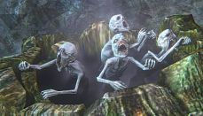

The Hunt Begins is a mad lib based off of FromSoftware's grim and atmospheric Bloodborne. While this small story was originally written to reflect it's inspiration's dark and gritty tone, this is a mad lib! See what you can come up with and remember, seek the paleblood to transcend the hunt.
"Good, all signed and sealed.
Now, let's begin the transfusion. Oh,
don't you worry. Whatever happens... You may think it all a mere bad dream..."
- Mysterious Yharnamite Healer
Elizabeth came to, head pounding. She tried to shift but found that she was still strapped to the operating table. She inspected her surroundings. The room had bloodstains all over. Operating tables were ordered neatly throughout the room. Bottles of blood and who knows what else lined the walls. Elizabeth swooned, nearly slipping back into unconciousness. Just as she regained focus, she noticed something exceedingly strange in the middle of the room; a pool of dark red liquid beginning to radiate outwards, growing larger by the second. Then something began to emerge from the pool... First a paw the size of Elizabeth's face, followed by a second paw, then a large lupine head. An unnaturally large wolf pulled itself from the liquid, soaked in a red substance. Blood, Elizabeth realized. She was going to die. Suddenly, the nightmarish beast burst into flames, howling in agony as it disappeared back into the blood from whence it came. The last thing Elizabeth remembered before her taxed mind gave out on her was a plethora of small skeletal figures, no bigger than infants, creeping from over the side of the table to cover her protectively. Pure white, their gaunt faces were masks of unspeakable pain and despair, yet paradoxically exuded such innocence and curiosity, Elizabeth couldn't help but feel comforted as she let go of conciousness.
When Elizabeth awoke again, She was completely lost. Picking herself up from off the ground, she inspected her surroundings. She seemed to be in some sort of graveyard. Gravestones were everywhere she looked, with small white flowers filling the spaces between. Leaning up against a bush, next to a flight of steps was a life size female doll. The doll had soft gray hair and a sweet, caring expression upon her face.
"A great deal of love and care has obviously gone into this doll," Elizabeth thought. Walking up the steps, she entered a small workshop. On the far side was an altar of some sort. Along the right wall was a large storage chest and a table with all sorts of tools. On the left wall sat a bookshelf with tomes in various languages and characters. Next to the bookshelf was a cozy fireplace with an old man in a wheelchair, seeming to sleep. With startling speed, the man looked up at Elizabeth with an intelligent and sorrowful gaze.
"Ah, you must be the one the messengers found," the man said. "I am Gehrman, and you are our newest hunter! Welcome to the Hunter's Dream. This place will serve as a respite during your adventures out in Yharnam. Feel free to use anything you find here, though many items have gone missing since the Hunt was at it's peak. I think you will find the doll especially useful. Here is a weapon, and a firearm to take with you. May they serve you well. Now, go and kill some beasts. It's for your own good."
Elizabeth took an axe and a pistol from Gehrman. Although both weapons were well worn from use, they were of high quality and still quite deadly. She examined the one-handed hunting axe. The handle was ingeniously designed to extend and turn the axe into a two-handed poleaxe with incredible reach. Elizabeth had no idea what she was getting herself into, but she now felt incredibly well prepared to face whatever monstrosities came her way.